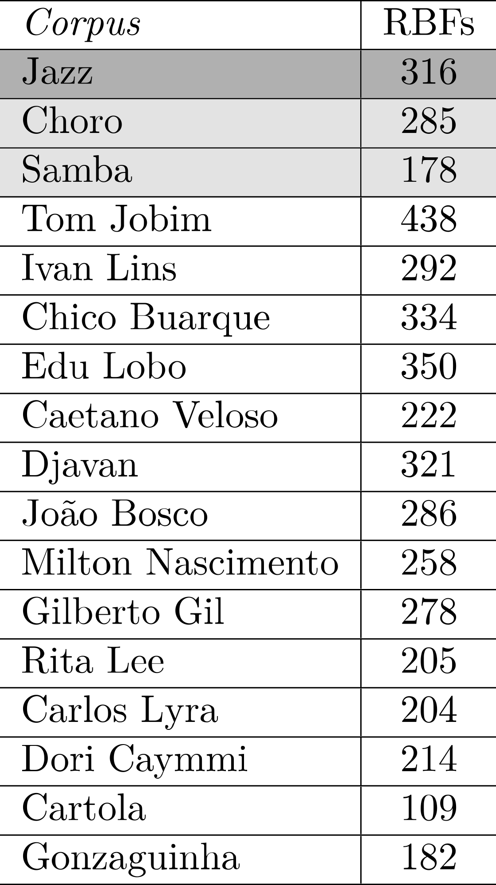
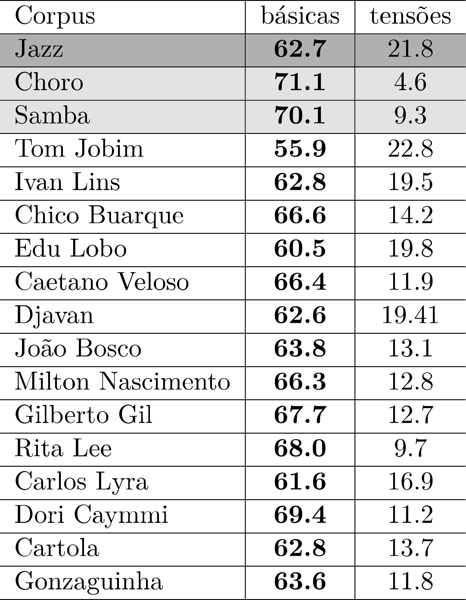
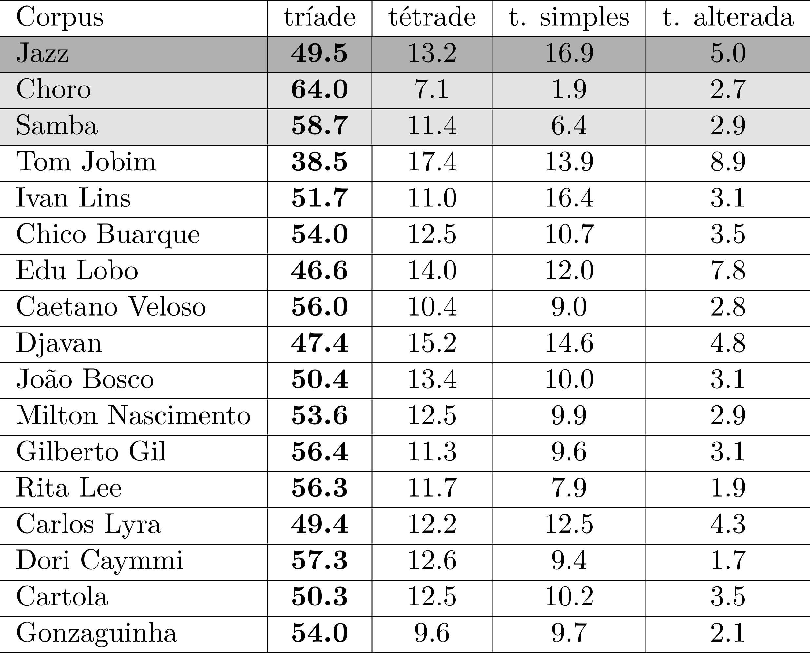
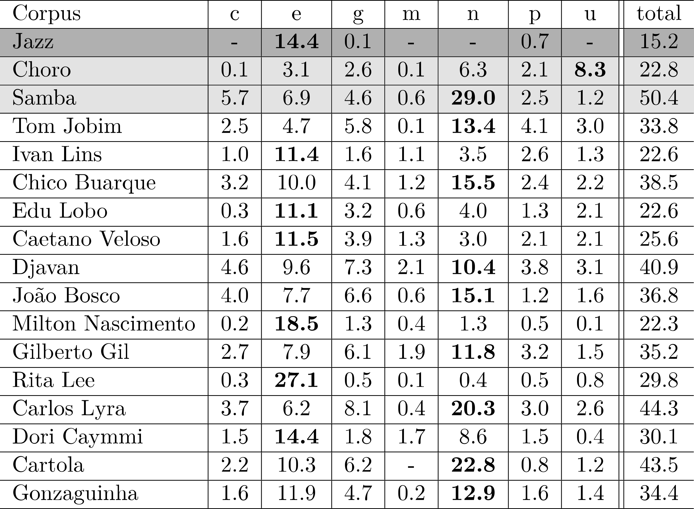

Atributos secundários de avaliação – resultados
Ao contrário do que é feito com os atributos primários, os secundários são apresentados em tabelas individuais e discutidos em seguida.
0.1 Atributos secundários harmônicos
2H1 (RELAÇÕES TONAIS)
2H1a

0.1.1 Discussão
Observa-se na tabela acima uma certa tendência de que os corpora MPB apresentem uma relativa alta diversidade de RBTs, em sintonia com o que acontece no corpus Jazz, o que sugere uma possível influência, ainda que vaga, no sentido de uma maior exuberância de soluções modulatórias. Nesse sentido, chama especialmente atenção a baixa quantidade de relações distintas no Samba,1 o que talvez reflita o fato de que modulações não sejam tão comuns como em outros gêneros e, consequentemente, a estabilidade tonal possa ser uma característica distinguidora.2 Essa conjectura abre uma via de pesquisa para estudos futuros.
2H1b

0.1.2 Discussão
Nota-se aqui também um possível definidor de fronteira entre a Prática Comum da MPB e o superconjunto representado pelos gêneros Samba e Choro, pois parece ser um marcador estilístico desse subconjunto uma maior presença de RBTs não notáveis. Entretanto, os repertórios de análise podem ser segmentados em dois grupos bem definidos: um envolvendo uma relativa baixa frequência de RBTs notáveis, em torno de 1/5 a 1/4 dos casos (Jobim, Ivan Lins, Edu Lobo, Caetano Veloso e Carlos Lyra) e o outro no qual tais relações abrangem de 40 % (Djavan) a 63 % (João Bosco), incluindo valores mais próximos à metade das ocorrências (Chico Buarque, Milton Nascimento, Gilberto Gil, Rita Lee e Gonzaguinha). Nesse contexto, o corpus Cartola pode ser visto como um caso à parte: devido às razões apresentadas acima, a baixíssima quantidade de RBTs notáveis pode se creditar ao fato de serem modulações relativamente raras no seu repertório selecionado. De toda maneira, pensamos que seria mais apropriado tratar esses dados (e seus desdobramentos) como insuficientes para qualquer conclusão mais consistente.
2H1c

0.1.3 Discussão
Como sugerem os dados, este atributo refina o anterior, evidenciando a distribuição das classes de RBTs. A respeito às classes de relações predominantes em cada repertório, podemos considerar quatro grupos: (1) MED, nos corpora Cartola, Jazz, Jobim, Ivan Lins, Edu Lobo, Carlos Lyra e Gonzaguinha (acima de 40 % do total) e, um pouco menos, Djavan e João Bosco; (2) REL, nos corpora Samba e, bem mais abaixo, Dori Caymmi, Chico Buarque, Gilberto Gil e Rita Lee; (3) TOM: nos corpora Caetano Veloso e Milton Nascimento;3 (4) (D/SD): apenas no corpus Choro.
2H2 (TIPOS ACORDAIS)
2H2a

0.1.4 Discussão
O número de tipos acordais distintos por corpus consiste em um dos mais fortes marcadores estilísticos harmônicos – mais uma vez, reforçando a hipótese da influência jazzística. Todos os repertórios MPB apresentam-se em patamares altos nesse atributo (com especial destaque para os corpora Jobim e Edu Lobo com, respectivamente, 75 e 73 TAs distintos, de um total de 161 possíveis).4
2H2b

0.1.5 Discussão
Um primeiro dado interessante na avaliação deste atributo é a convergência de quase todos os corpora em relação à proeminência do genus Y5 (por volta de 40 % do total, em média), o que reflete indubitavelmente o compartilhamento de propriedades sintáticas tonais e, mais especificamente, a presença de preparações dominantes – primárias e secundárias – nesses repertórios.6 A partir disso, observamos como os corpora analíticos (juntamente com o corpus Jazz e com as notáveis exceções dos Caetano Veloso, Milton Nascimento, Gilberto Gil e Rita Lee (e, um pouco menos, Dori Caymmi), nos quais a qualidade V tem forte presença) formam um grupo coeso em oposição aos controles Samba e Choro, no que diz respeito à maior presença dos genera Z/z em oposição aos triádicos V/v, numa razão média, aproximada, de 8:1 (e o inverso se observa nos dois repertórios). Esses resultados, mais uma vez, contribuem para confirmar a hipótese da existência de uma relação de influência Jazz → MPB no domínio da harmonia, que se revela aqui a uma forte preferência por tipos acordais tetrádicos.
2H2c

0.1.6 Discussão
A presença maciça de variantes de tipos acordais é também um marcador estilístico do subconjunto MPB. No entanto, os dados permitem estabelecer três grupos de situações: (a) os repertórios Choro e Samba são bastante convergentes neste atributo, ao apresentar um número quase irrelevante de TAs variantes; (b) ainda que em número maior, as variantes no corpus Jazz são superadas pelos protoacordes em uma razão 2:1; (c) nos corpora MPB observa-se, em média, uma paridade aproximada entre protoacordes e variantes (destacando-se o caso especial do corpus Ivan Lins, com as variantes representando quase 3/4 do total de TAs) e Edu Lobo e Dori Caymmi (quase 2/3).7 Os resultados contribuem para reforçar a hipótese sobre a influência harmônica do Jazz, porém, neste caso, sugerem uma intensificação na complexidade acordal (em relação ao modelo jazzístico) como uma possível característica da Prática Comum da MPB, o que pode ser detalhado no exame de outros atributos.
2H2d
0.1.7 Discussão
O detalhamento do atributo anterior traz, embora em magnitudes diferentes, uma convergência dos três repertórios de controle para o protoacorde Y0.8 Já na maior parte dos repertórios de análise, a proeminência recai sobre variantes do mesmo genus (que se apresentam caracteristicamente em grande diversidade), o que pode se constituir um interessante e sutil marcador estilístico, a depender de futuros estudos para sua confirmação. Interessantemente, o genus mais recorrente de Caetano Veloso (V) não apresenta variantes, apenas protoacordes, o que parece ser uma faceta estilística pessoal significativa. A preferência pelos protoacordes triádicos maiores também se observa nos corpora Milton Nascimento e Rita Lee. Cartola e Gonzaguinha tendo o protoacorde menor com sétima (z) como mais proeminente, diferencia-se dos demais casos em relação a este atributo.
2H3 (FUNÇÕES)
2H3a

0.1.8 Discussão
Neste atributo os corpora MPB mais uma vez se mostram em sintonia com o repertório jazzístico, apresentando uma alta diversidade de categorias funcionais (com um especial destaque ao corpus Jobim, abarcando cerca de 3/4 do total possível preconizado pelo modelo teórico adotado (ver capítulo sobre os modelos teóricos).9 Novamente, os repertórios de controle Samba e Choro apresentam diversidade semelhante, em níveis sensivelmente mais baixos em relação ao outro grupo (com a exceção de Cartola), reforçando a separação dos dois conjuntos também no aspecto do vocabulário das categorias funcionais.
2H3b

0.1.9 Discussão
Em relação a classes (ou subclasses significativas) de categorias funcionais, observa-se inicialmente, como seria de se esperar, uma preponderância absoluta da classe DIA (com destaque especial do corpus Samba), o que apenas é reflexo de uma característica geral compartilhada por repertórios de música tonal. A especificidade funcional da MPB (em conjunção com a do corpus Jazz, como em outros atributos harmônicos) se evidencia na distribuição de outras classes/subclasses, especialmente SubV e EC1, que apresentam relativamente maior peso do que nos corpora de controle Samba e Choro. No contexto dos repertórios de análise, o caso do corpus Milton Nascimento deve ser observado à parte, já que os dados associados a este atributo revelam inequivocamente as profundas diferenças na construção harmônica em comparação aos demais corpora. É, em especial, marcante os sensivelmente baixos valores das subclasses que compõem a classe funcional de acordes preparadores (DS, SubV, DIM), o que é fortemente sintomático de um tratamento eminentemente modal (veja especialmente a discrepância entre os percentuais envolvidos). Por razões semelhantes àquelas já elencadas, o corpus Cartola também se apresenta aqui destoante em relação ao núcleo MPB, corroborando um comportamento geral funcional mais modesto.
2H3c

0.1.10 Discussão
Nada de muito surpreendente surge nos dados apresentados na tabela acima: quase todos os corpora convergem para o I grau, como a categoria funcional mais recorrente da classe DIA. As exceções – no corpura Chico Buarque e Cartola – o V é o mais comum,10 o que não deixa de ser uma informação coerente com o que se observaria em qualquer repertório essencialmente tonal. Num nível mais apurado de observação, torna-se mais uma vez sintomática a distinção entre o corpus Milton Nascimento e os demais, devido à magnitude da presença do I grau (cerca de 10 pontos percentuais a mais em relação ao valor médio demais repertórios) e também considerando que supera V quase pelo triplo (em contraste com o máximo de duas vezes, nos demais corpora). Tal proeminência reduz consequentemente a importância dos demais graus diatônicos nesse repertório, contribuindo mais uma vez para enfatizar seu caráter essencialmente modal (através da diminuição da diversidade diatônica).

0.1.11 Discussão
Neste caso, há uma divisão das preferências em três grupos: pelo V/V (Choro, Jobim, Edu Lobo, Milton Nascimento, Rita Lee e Dori Caymmi),11 pelo II cadencial (Jazz, Ivan Lins, Chico Buarque, Caetano Veloso, Djavan, Gilberto Gil, Carlos Lyra, Cartola e Gonzaguinha) e V/II (Samba e João Bosco). Nenhuma conclusão sólida referente a estilo pode ser extraída desses resultados isoladamente.

0.1.12 Discussão
Os dados revelam que acordes da classe SUBV, embora menos comuns do que dominantes secundários, estão presentes em todos os repertórios (em menor frequência nos corpora Choro, Cartola e Milton Nascimento), com maior proeminência daqueles cujos alvos preferenciais são o I (Jazz, Jobim, Edu Lobo e Carlos Lyra) e o V graus (Choro, Samba, Ivan Lins, Chico Buarque, Caetano Veloso, Djavan, João Bosco, Gilberto Gil, Rita Lee, Dori Caymmi e Cartola). Tal situação não permite conclusões consistentes em relação a características estilísticas.12

0.1.13 Discussão
A relativa presença de empréstimos é certamente um forte marcador estilístico da Prática Comum da MPB, a partir de uma suposta herança jazzística. O quadro apresentado acima deixa, por si só, tal fato evidente. A distribuição das categorias funcionais dessa classe em quase todos os repertórios tende a convergir para o IVm7 como a mais proeminente, com algumas exceções: (1) nos casos do corpora Ivan Lins e Jazz, bVII7 é a categoria mais comum, porém diverge pouco em termos gerais de IVm7, já que ambas pertencem à mesma subclasse funcional, “Subdominante menor” (sd); (2) no corpus Caetano Veloso, a preferência é pelo bVIM7, uma categoria, como as anteriores integrante do grupo “Subdominante menor” (o que torna as opções, na prática, equivalentes); (3) Por outro lado, no corpus Edu Lobo Vm7 é a categoria mais recorrente, talvez refletindo a presença de lógicas modais nos repertórios dos compositor, ou seja, podendo representar uma característica estilística pessoal mais significativa; (4) Atribuímos a uma razão semelhante a recorrência da categoria bVIIM7 como a mais comum (e bem acima das demais) no corpus Milton Nascimento; (5) o “subdominante blues” (IV7) é o empréstimo mais comum nos corpora Djavan, Gilberto Gil e Rita Lee.

0.1.14 Discussão
Apesar de sua relativa raridade, os empréstimos de segunda ordem contribuem ainda com mais intensidade para a marcação das fronteiras da MPB em relação ao superconjunto no qual se insere. Como mostram os dados, o corpus Jobim é o que mais se destaca nesse atributo, sendo o único no qual todas as categorias mapeadas estão presentes. Por outro lado, nos corpora João Bosco, Caetano Veloso, Rita Lee e, especialmente, Cartola as categorias da classe EC2 são ainda mais raras, o que faz distanciar esse grupo daquele que podemos denominar o núcleo MPB referente a tal classe.
2H3d

0.1.15 Discussão
O número de RBFs distintas varia consideravelmente – de 109 (Cartola) a 438 (Jobim). Como em outros atributos, percebemos no subconjunto MPB uma subdivisão em dois blocos: um deles (incluindo aqui o corpus Jazz), composto pela maioria dos repertórios, mantém, em média, 310 RBFs distintas. O segundo bloco é formado por corpora com números de relações consideravelmente menores: Gilberto Gil, Carlos Lyra, Dori Caymmi, Rita Lee, Gonzaguinha e Cartola (alguns deles com valores inferiores aos dos repertórios de controle). Mais uma vez, distinções internas entre os compositores MPB na esfera harmônica se evidenciam, o que demandará avaliações complementares futuramente.
2H3e

0.1.16 Discussão
Há, em termos percentuais, uma convergência geral pelas RBFs em alto nível DIA|DIA,13 excetuando-se os corpora Jobim e Chico Buarque, nos quais a predominância recai sobre, respectivamente, DIA|CR, CR|CR.14
0.2 Atributos secundários melódicos
2M1 (NOTAS-FUNÇÕES)
2M1a

0.2.1 Discussão
A presença de notas diatônicas em peças em modo maior é, como se esperaria em qualquer repertório, bastante alta: em média 90%,15 ficando Edu Lobo com a menor taxa (87%). No modo menor, o diatonicismo também é bastante alto (por volta de 84%, em média), porém não tanto em relação ao maior, devido às alternâncias de notas das escalas natural, harmônica e melódica. Como em outros atributos, os dados não trazem contribuições no sentido de evidenciar alguma fronteira da MPB, pelo contrário, são consistentes quanto às normas compartilhadas por repertórios tonais, de cunho geral, portanto.
2M1b

0.2.2 Discussão
Observamos também uma certa uniformidade no que se refere à distribuição das inflexões, que correspondem, em média a 1/5 das notas melódicas (confirmando aproximadamente o senso comum analítico). Num olhar mais detalhado, percebemos como o corpus Choro é o que, no grupo de controle, apresenta a maior percentagem dessa categoria de nota-função (24.3%), o que é também uma informação consistente em relação ao que se conhece informalmente obre o comportamento da melodia nesse gênero.16
2M1c

0.2.3 Discussão
Ao contrário dos anteriores, este atributo permite delinear mais claramente as fronteiras da MPB em relação aos repertórios de controle Samba e Choro, já que a superclasse das tensões mostram uma considerável presença nos corpora analíticos (em congruência com o repertório jazzístico). No entanto, os corpora Tom Jobim (especialmente), Ivan Lins, Edu Lobo e Djavan apresentam um percentual mais elevado de tensões do que os demais repertórios, o que sugere que possam integrar um subgrupo especial, com relações melodia/harmonia mais complexas.17
2M1d

0.2.4 Discussão
A Tabela acima detalha o atributo anterior, mostrando como as distribuições das classes de notas-estruturais tornam ainda mais claras as diferenças entre a MPB (mais uma vez, associada ao corpus Jazz) e o superconjunto Choro-Samba. Considerando as classes em separado: (a) tríades – o Choro se destaca pelo alta percentagem (64 %) nesta classe, seguido pelo Samba, em contraste aos demais repertórios;18 (b) tétrades – neste caso, percebe-se uma relativa homogeneidade de todos os repertórios (com o Choro se distanciando um pouco da média), o que provavelmente deve ser reputado à frequência de TAs Y, como já apresentado na avaliação dos atributos secundários harmônicos; (c) tensões simples – nesta classe de notas-estruturais, a distância em relação ao superconjunto aumenta, o que se evidencia como um marcador estilístico importante (é interessante perceber a forte similaridade das distribuições dos corpora Jazz e Ivan Lins, os com maior porcentagem da classe (acima de 16 % do total);19 (d) tensões alteradas – ao contrário da classe das tensões simples, a das tensões alteradas é menos distinguidora, apresentando distribuições relativamente próximas de todos os repertórios (destacando as altas percentagens dos corpora Jobim e Edu Lobo).20
2M2 (ALTURAS)
2M2a
0.2.5 Discussão
A tabela acima nos informa que graus conjuntos são gestos preferenciais na construção melódica (em média, correspondendo à cerca de metade dos movimentos intervalares),21 independentemente do repertório considerado (embora com diferentes flutuações), o que não deixa de ser uma informação relevante, embora não diretamente associada aos presentes objetivos. Por outro lado, saltos são bem menos comuns em todos os repertórios (com um destaque especial na música de Edu Lobo, com cerca de 10 % dos movimentos melódicos).
2M2b

0.2.6 Discussão
O refinamento do atributo anterior aponta para a c-letra p (grau conjunto descendente) como a mais recorrente em quase todos os repertórios.22 Outras observações secundárias (porém não conclusivas) podem ser acrescentadas: (1) a repetição de nota (u) é significativamente forte (acima de 20 %) nos corpora Samba, Ivan Lins, Chico Buarque, João Bosco, Gilberto Gil, Dori Caymmi e Cartola (e, claro, em Rita Lee e Milton Nascimento, repertório no qual alcança quase 40 % das ocorrências); (2) gestos arpejados ascendentes (A) se apresentam em uma razão aproximada 2/1 no Choro em relação à maior parte dos demais repertórios (a distância é menor com respeito ao corpus Djavan e quase nula em Rita Lee). O movimento em arpejo descendente (a), embora menos expressivo, é também mais comum no gênero do que nos demais repertórios. Ambas as informações são consistentes com o que conhecemos informalmente sobre a construção melódica em choros, quanto à característica presença de preenchimentos arpejados; (3) saltos são muito mais comuns no Jazz do que nos demais corpora, especialmente os ascendentes. Chama a atenção a relativa raridade de saltos descendentes nos corpora Jobim (1.4 %), Caetano Veloso (1.3 %), Cartola (1.1 %), Gilberto Gil (0.9 %) e, principalmente, em Milton Nascimento e Rita Lee (ambos com 0.6 %), o que os torna ainda mais notáveis quando aparecem, geralmente com função expressiva.23
2M3 (RITMO)
2M3a
0.2.7 Discussão
O perfil métrico é um dos mais importantes atributos na evidenciação de uma “linhagem” musical brasileira na MPB, pois trata da essência de sua rítmica. Diversos aspectos merecem ser comentados: (1) Como era esperado, quase todos os repertórios têm a posição 1 como o ponto de maior recorrência, com as notáveis exceções de Rita Lee (ponto 7 como o mais comum), de Carlos Lyra e do Samba (em ambos a posição predominante é 10, a essência da sincopação desse gênero);24 (2) Nesse sentido, além de Carlos Lyra, os corpora Cartola, Choro, Jobim, Chico Buarque, Djavan, João Bosco e Gilberto Gil são os que poderiam ser considerados mais próximos do Samba, dadas suas distribuições nessa posição (mais do que 1/5 de ocorrências). O corpus Jazz (também como esperado) é o que apresenta a mais baixa percentagem na posição 10, quase desprezível (são também especialmente baixos os percentuais de Milton Nascimento e Rita Lee em relação a essa posição micrométrica); (3) Por outro lado, a posição 7 (que divide o tempo na metade) apresenta alta concentração de ataques nos corpora Jazz, Milton Nascimento (os dois muito próximos e bem acima dos demais), Dori Caymmi e, especialmente, Rita Lee (o mais alto valor de todos, 48.3 %); (4) As posições que contribuem para dividir o tempo em três partes iguais (5 e 9) apresentam alta distribuição em Milton Nascimento e Ivan Lins (em média, respectivamente, 12 e 11 %), bem acima do que nos demais repertórios.25 Tais posições são raramente ocupadas no Samba (menos de 1 %) e no Choro (em média, 1.5 %).
2M3b

0.2.8 Discussão
As relações de afinidade sugeridas no atributo anterior são, de certo modo, confirmadas na tabela acima, com o detalhamento das r-letras contramétricas.26 Nos corpora nos quais a proeminência recai sobre a contramétrica r-letra e, podemos especular se Dori Caymmi, Ivan Lins e Edu Lobo apresentariam uma influência jazzística (mesclada talvez a outras possibilidades, como a estética pop ou gêneros musicais nordestinos) no aspecto da organização melódico-rítmica. Por outro lado, Milton Nascimento também apresenta uma forte recorrência dessa r-letra, porém, certamente, não devido apenas a uma influência jazzística (que existe, de fato), mas, certamente, também de outras possíveis fontes (como as músicas folclórica, música sacra, ou mesmo canções dos Beatles). No caso de Caetano Veloso e Rita Lee (especialmente), podemos talvez atribuir os resultados obtidos à ligação que suas músicas apresentam com os gêneros do rock e do rhythm and blues. Já os corpora Carlos Lyra e Cartola, seguidos por Jobim, Chico Buarque, João Bosco (e, um pouco menos, Djavan e Gilberto Gil) sugerem claramente uma maior aproximação ao Samba, denotada pela proeminência da r-letra n, o que reforça, em linhas gerais, nossas intuições sobre esses repertórios. Nesse quadro, o corpus} Choro se posiciona à parte, com alta presença da r-letra , uma das células características do gênero. De um modo geral, um emprego pronunciado de r-letras contramétricas (em média, por volta de 1/3 do total das configurações) denota um alto grau de sincopação rítmica. Nesse aspecto, Cartola, Carlos Lyra e Djavan se destacam claramente dos demais.
2M3c

0.2.9 Discussão
Embora menos importante do que os atributos rítmicos anteriores, a distribuições das r-letras tercinas contribui indiretamente para evidenciar particularidades estilísticas individuais. Inicialmente, considerando os percentuais dessas letras em relação ao Alfabeto-r, observamos que os corpora Ivan Lins, Tom Jobim, Cartola e João Bosco se destacam como os de maior proeminência nesse quesito, seguidos – um pouco mais afastados – por Edu Lobo, Caetano Veloso, Carlos Lyra, Dori Caymmi e Milton Nascimento, deixando os demais bem mais distantes. No que se refere ao detalhamento das r-letras, é interessante perceber que, enquanto em Ivan Lins (e, um pouco menos, Cartola, João Bosco, Gilberto Gil e Rita Lee) as r-letras d e k se destacam (são associadas às fórmulas de quiálteras de semínimas, de uso acentuado em várias canções do compositor), as preferências de Jobim, Carlos Lyra e Dori Caymmi recaem mais pela r-letra s, o grupo de quiálteras de colcheias, enquanto em Milton a presença de o (grupo de quiálteras de colcheias com pausa na primeira articulação) é mais expressiva.
Referências
Notas de rodapé
O corpus do sambista Cartola, com apenas 6 RBTs, apresenta valor bem próximo daquele observado no controle Samba, o que pode reforçar a correlação com o gênero. Por outro lado, é possível também atribuir o número reduzido de RBTs ao fato de o repertório de Cartola apresentar apenas 20 peças (de acordo com as estratégias metodológicas adotadas na segunda fase do projeto), o que dificultaria uma comparação com em comparação com os demais repertórios da Fase 1 do projeto nos mesmos termos (isso também se aplica ao repertório Gonzaguinha, embora Caymmi e Lyra – que também integram a Fase 2 – apresentem bem mais RBTs do que ambos).↩︎
Num patamar intermediário, em torno de 15%, encontram-se os corpora Chico Buarque, João Bosco, Gilberto Gil e Rita Lee.↩︎
O que poderia ser visto como um interessante marcador estilístico compartilhado, embora, provavelmente, a força dessa classe não em ambos os repertórios não advenha das mesmas razões. Afinal, as obras desses compositores divergem consideravelmente em relação ao aspecto estético e, também, em respeito à construção harmônica, tendo em vista o fato de que a música de Milton é fortemente modal, ao contrário do que se observa nas composições de Caetano. Subjacentemente, salta aos olhos a extraordinária semelhança dos percentuais apurados referente a esse atributo específico.↩︎
Nesse quadro, os tropicalistas Caetano Veloso, Gilberto Gil e Rita Lee ocupariam uma posição intermediária entre os dois níveis, o que parece ser coerente com as afinidades estéticas que apresentam. Também apresentam números relativamente baixos de tipos acordais distintos os corpora Carlos Lyra, Cartola e Gonzaguinha.↩︎
Há duas notáveis exceções: a primeira no repertório de Milton Nascimento (que privilegia a qualidade básica de tríade maior, seguida proximamente pelo tipo básico z). Bastante interessante ainda é a discrepância em relação à tríade menor, cerca de oito vezes menos comum do que a maior). Como discutido na avaliação dos atributos primários, esse resultado é um forte sintoma do tratamento predominante modal da música do compositor. Outros fatos relacionados aos tipos acordais reforçam essa interpretação: além da relativa baixa ocorrência do genus Y (se comparada aos dos demais corpora), registre-se também a raridade dos genera meio-diminuto (y) e diminuto (x), elementos com certa presença em repertórios tonais. A segunda exceção é observada no corpus Gonzaguinha, com a predominância ocorrendo em relção ao genus z (um pouco acima de Y).↩︎
Caetano Veloso, Gilberto Gil e Cartola ocupam uma posição intermediária dentro do subconjunto MPB, com os protoacordes superando as variantes em mais do que o dobro. Já no repertório de Rita Lee essa diferença é ainda mais acentuada (apenas 16.7 % são variantes).↩︎
O que é acompanhado pelo corpus Gilberto Gil.↩︎
Jobim é seguido bem de perto por Gilberto Gil e Djavan. Por outro lado, Cartola é o corpus que apresenta a menor quantidade de categorias funcionais (25), menos até do que os controles Samba e Choro. Isso pode ser talvez interpretado como fruto de uma maior consistência (e, consequentemente, menor diversidade) de soluções funcionais em sua música, algo que pode ser também correlacionado a outros atributos associados a funções.↩︎
Na verdade, o V é a segunda categoria mais comum nos demais repertórios, quase empatando em frequência com o I no corpus Samba.↩︎
À parte a recorrência dessa categoria funcional – diríamos, quase “normal”, em comparação aos demais – o repertório de Milton Nascimento se notabiliza pela raridade dos demais dominantes secundários, o que é novamente um fator que sugere uma preferência pelo modalismo.↩︎
Um dado especialmente interessante é a ausência de manifestações do SubV primário nos Rita Lee e Cartola.↩︎
Destacando-se o peso expressivo dessa RBF nos corpora Rita Lee (46.2 %) e Caetano Veloso (44.2 %), os mais altos percentuais de todos, incluindo os repertórios de controle.↩︎
Este atributo mais uma vez contribui para reforçar a impressão de ser a harmonia jobiniana mais complexa e excêntrica do que as de seus pares.↩︎
Destacando-se o corpus Samba como o mais diatônico melodicamente, com impressionantes 97%. Dos repertórios de análise, Gonzaguinha é o que mais se aproxima desse patamar, com 96%.↩︎
Dos corpora de análise, Cartola, João Bosco e, especialmente, Gonzaguinha são os que possuem maiores percentuais de inflexões, acima de 23%.↩︎
Nos corpora Milton Nascimento, Caetano Veloso, Gilberto Gil, Rita Lee, Dori Caymmi e Gonzaguinha a presença de tensões é consideravelmente menor do que no outro subgrupo.↩︎
Embora Chico Buarque, Milton Nascimento, Gilberto Gil, Caetano Veloso, Rita Lee e Dori Caymmi apresentem valores próximos.↩︎
Por outro lado, Chico Buarque, Caetano Veloso, Milton Nascimento, Gilberto Gil, Rita Lee, João Bosco, Dori Caymmi e Cartola apresentam percentuais mais baixos e próximos entre si.↩︎
Os repertórios de Rita Lee e de Dori Caymmi são os que apresentam menores percentagentuais desta categoria, abaixo de 2 %.↩︎
Atingindo em Jobim o máximo percentual (58 %).↩︎
Apenas em três casos ela é superada: no Jazz – por pouco – por sua inversão P; nos corpora Milton Nascimento e Rita Lee pela repetição de notas u. Contudo, enquanto em Lee u é apenas levemente superior a p (uma diferença de 0.3 ponto percentual), no caso de Nascimento, isso se dá por uma margem considerável (14 pontos percentuais), o que é razoavelmente surpreendente.↩︎
Sobre esse aspecto específico na música de Jobim, ver discussão a respeito em (Almada 2023, 213–26).↩︎
Podemos, na verdade, considerar a posição 10 como uma espécie de elemento de medição de contrametricidade, o que será explorado nos demais atributos secundários rítmicos.↩︎
Jobim vem logo após a dupla (média de 8.6 %), o que se atribui principalmente à fase inicial do compositor, marcada pela forte presença de sambas-canções.↩︎